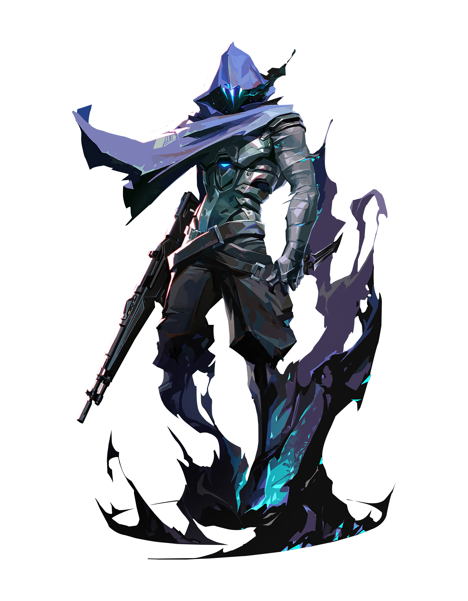

OMEN
Controller
A phantom of a memory, Omen hunts in the shadows.
He renders enemies blind, teleports across the field, then lets paranoia take hold
as his foe scrambles to learn where he might strike next.

Skills
PARANOIA
INSTANTLY fire a shadow projectile forward,
briefly reducing the vision range of all players it touches.
This projectile can pass straight through walls.
COST: 200
DARK COVER
EQUIP a shadow orb and see its range indicator.
FIRE to throw the shadow orb to the marked location, creating a long-lasting shadow sphere that blocks vision.
HOLD ALTERNATE FIRE while targeting to move the marker further away.
HOLD the ability key with targeting to move the market closer.
COOLDOWN 45 Seconds, CHARGES: 2
SHROUDED STEP
EQUIP a shadow walk ability
nd see its range indicator.
WIRE to begin a brief channel, then teleport to the marked location.
COST: 200, CHARGES: 2
FROM THE SHADOWS
EQUIP a tactical map.
FIRE to begin teleporting to the selected location.
While teleporting, Omen will appear as a Shade that can be destroyed by an enemy to cancel his teleport.
COST: 6 points